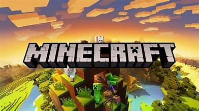
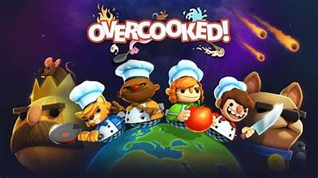
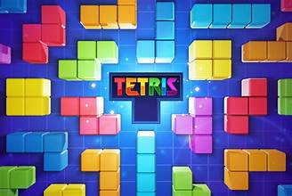
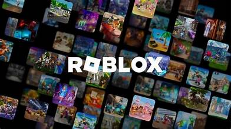
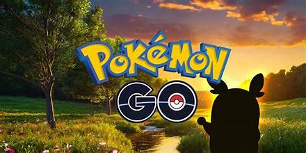
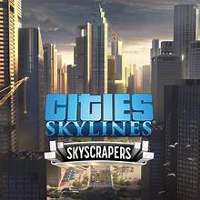
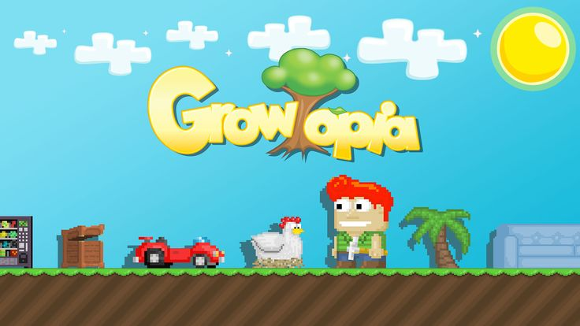

🎮 Rekomendasi Game Sehat
Game tidak selalu berdampak buruk. Beberapa game dapat membantu melatih kreativitas, strategi, kerja sama tim, dan kemampuan memecahkan masalah jika dimainkan secara seimbang.

Minecraft
Game sandbox yang memungkinkan pemain membangun berbagai struktur, menjelajah dunia, dan bekerja sama dengan pemain lain.
✅ Problem solving
✅ Kerja sama tim
✅ Perencanaan strategi

Stardew Valley
Game simulasi pertanian dengan gameplay santai yang membantu pemain mengatur waktu dan mengelola sumber daya.
✅ Manajemen waktu
✅ Pengambilan keputusan
✅ Fokus jangka panjang

Overcooked
Game memasak multiplayer yang menuntut komunikasi, koordinasi, dan pembagian tugas yang baik.
✅ Kerja sama
✅ Koordinasi tugas
✅ Pengambilan keputusan cepat

Tetris
Game puzzle klasik yang membantu meningkatkan kecepatan berpikir dan kemampuan mengenali pola.
✅ Fokus dan konsentrasi
✅ Mengenali pola
✅ Pengambilan keputusan

Roblox
Tidak hanya berisi game, Roblox juga menyediakan fitur untuk membuat game sendiri menggunakan Roblox Studio.
✅ Kreativitas
✅ Desain game
✅ Problem solving

Pokémon GO
Game berbasis lokasi yang mengajak pemain berjalan kaki untuk menjelajahi lingkungan sekitar.
✅ Eksplorasi lingkungan
✅ Interaksi sosial
✅ Mengurangi sedentary lifestyle

Cities: Skylines
Game simulasi pembangunan kota yang mengajarkan perencanaan, manajemen sumber daya, dan pengambilan keputusan.
✅ Manajemen sumber daya
✅ Perencanaan jangka panjang
✅ Analisis masalah

Growtopia
Growtopia adalah game sandbox multiplayer yang memungkinkan pemain membangun dunia sendiri, berdagang item, serta berinteraksi dengan pemain dari berbagai negara.
✅ Belajar dasar ekonomi dan perdagangan virtual
✅ Melatih pengambilan keputusan saat trading